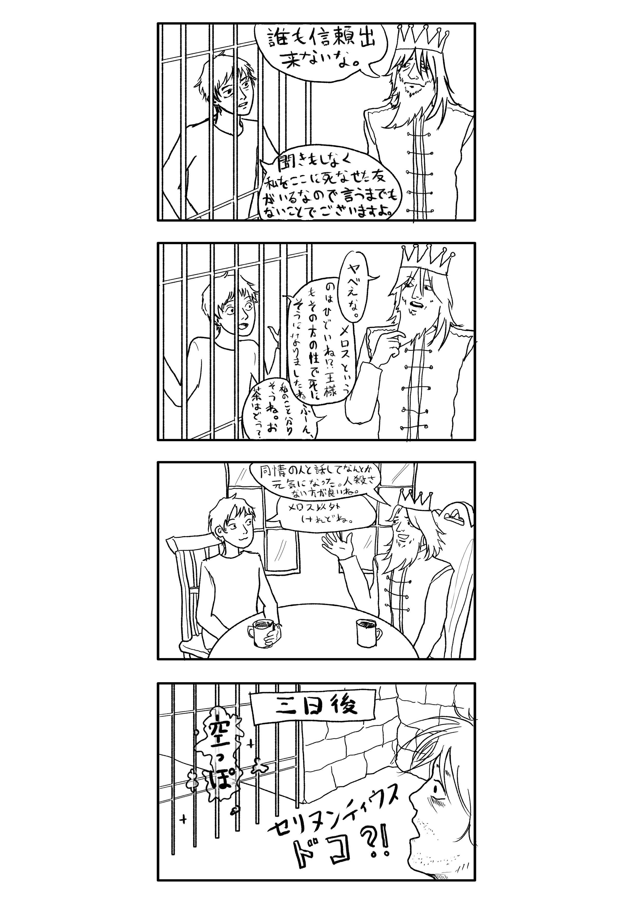

話はここ：https://www.aozora.gr.jp/cards/000035/files/1567_14913.html
「走れメロス」という話を読みました。難しい言葉もありますが、なかなか短いし、辞書があったらそれほど難しくないと思います。因みに、沢山のオノマトペも学べますよ。 例えば:
| ひっそり | silent; deserted |
| どうどう | with a roaring sound (of water or wind); sound of feet stamping on the ground |
| ぜいぜい | gasping for breath |
| うとうと | dozing off |
| ずんずん | rapidly |
話を読んで、メロスが前に「いいの」とかいうことを聞いたこともなかったのに友を身代りにしたのはちょっと残酷じゃないかな、セリヌンティウスは何とか可哀そうだな、と思ってて、話がちょっと異なったな冗談の四コマ漫画を描きました。
